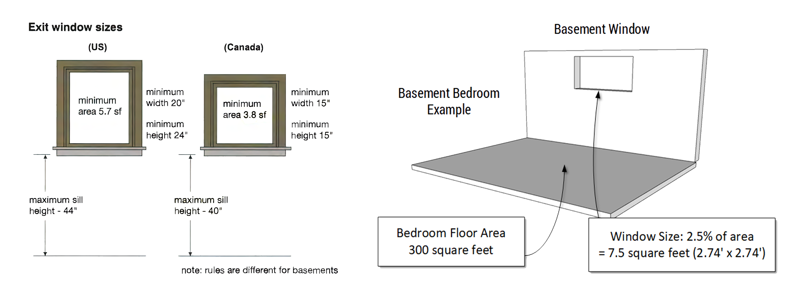
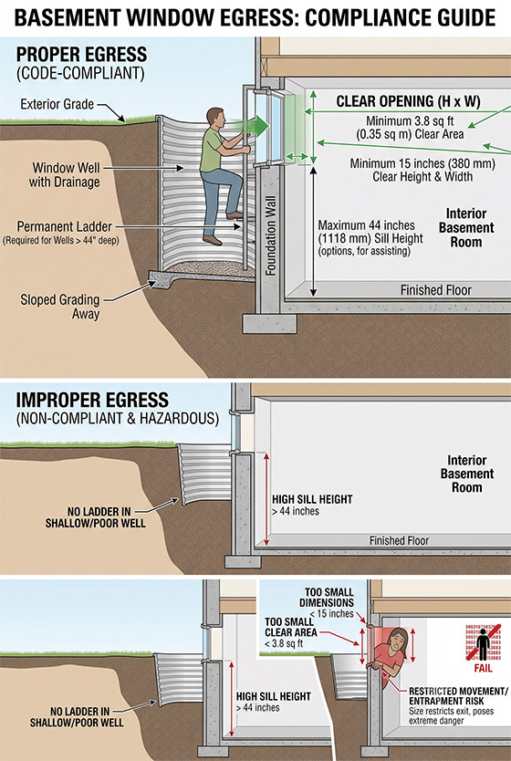
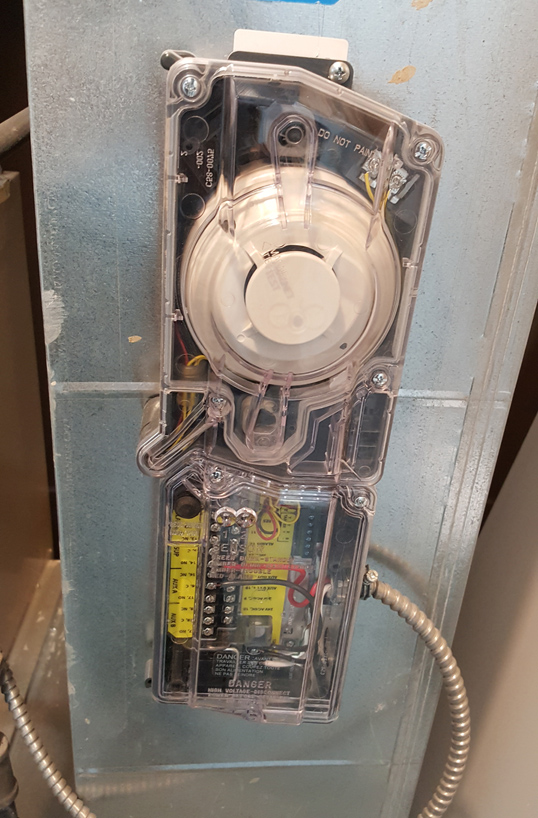

-
A Word about Basement Apartments
Here, in the Mississauga and Brampton areas, there are many secondary housing units. Almost 75% of these units are basement apartments. However, many do not follow proper Ontario building codes, so there are thousands of illegal basement apartments.
There are minimum standards for a legal basement, but standards may vary slightly depending on location and regulations.
NOTE: Home inspectors DO NOT provide opinions on whether a basement apartment is legal or not in their reports!
A home inspector will report on general issues about a basement, or explain systems that can be helpful to a new homeowner. The following only shows some parts, not all requirements for proper basement apartments.
Using a residential home for a basement apartment for renting, requires each owner, to consult with their local municipal planning/building departments. -
Windows
In the basement, having an emergency exit is critical and can be lifesaving since there are fewer options to exit. In Canada, the minimum size requirement for the egress window is 15"x15", with an area of 3.8 square feet. Many require that every bedroom should have a window for easy exit.
When it comes to a secondary unit, the size of the window is determined by the size and use of the unit.
The government of Ontario requires that the window size be 5% of the floor area in a living/dining rooms and 2.5% of the floor area for bedrooms. Of course bigger is always better not just for safety, but it provides more natural light to enter a closed space.Home inspectors do look at the size of basement windows for proper egress, but stop short of calculating for apartment use. They have no idea on the use of the basement after the sale is completed. When it comes to the window egress, always make sure that the window can be opened, not protected by a lock or is not blocked by debris.

-

Window Egress Access
-
Duct Smoke Detector
For fire safety reasons, the Ontario Building Code requires installing a smoke alarm system that will monitor the ducts and shut down the entire system in case of an emergency. This includes the electrical and fuel supply, so it can prevent the spread of smoke from one unit to another. This is because the house uses a single furnace and distribution duct system for multiple units.
The device required is not an ordinary smoke detector (regular smoke detectors are still required), as it must meet a specific standard called UL268A. There is a sensor head on the front and a sampling tube behind the device that is inserted into the duct. It then samples air passing through it, and if there is sufficient smoke, then the alarm will signal and proceed to shut down the system.
You can install a separate furnace with separate air ducts to the secondary unit. This is much more costly, but this does prevent the sharing of any odours from smokers, cooking smells, or even noise. You also can have separate controls for thermostats to better suit the needs of the individuals in each unit.

-

HVAC Duct Smoke Detector
-
Ceiling Heights
When it comes to basements, many older basements may have very short ceiling heights. This could be a problem with converting basements into a secondary unit.
The ceiling height should be 6' 4 3/4".
What if the basement is too low? Unfortunately, the only answer to meet the requirements is to lower the basement floor, which will be costly.
-
Increase Ceiling Height?
Lowering the basement can be done using either of the two systems.
Bench Footing
When viewing a house and going into the basement, you can often tell almost immediately if that house has had its floor lowered. The tell is the bench around the walls. When the floor is lowered, a curb is built along the walls and below the foundation. Here, the footings are not underpinned.Underpinning
This method is more expensive and time-consuming. Underpinning creates a new concrete underpinning under the existing footing. The benefit is that we don't have that curb around the basement. -
 Lowering Basement: Bench Footing
Lowering Basement: Bench Footing Lowering Basement: Underpinning
Lowering Basement: Underpinning
{kind=link}
{kind=link}